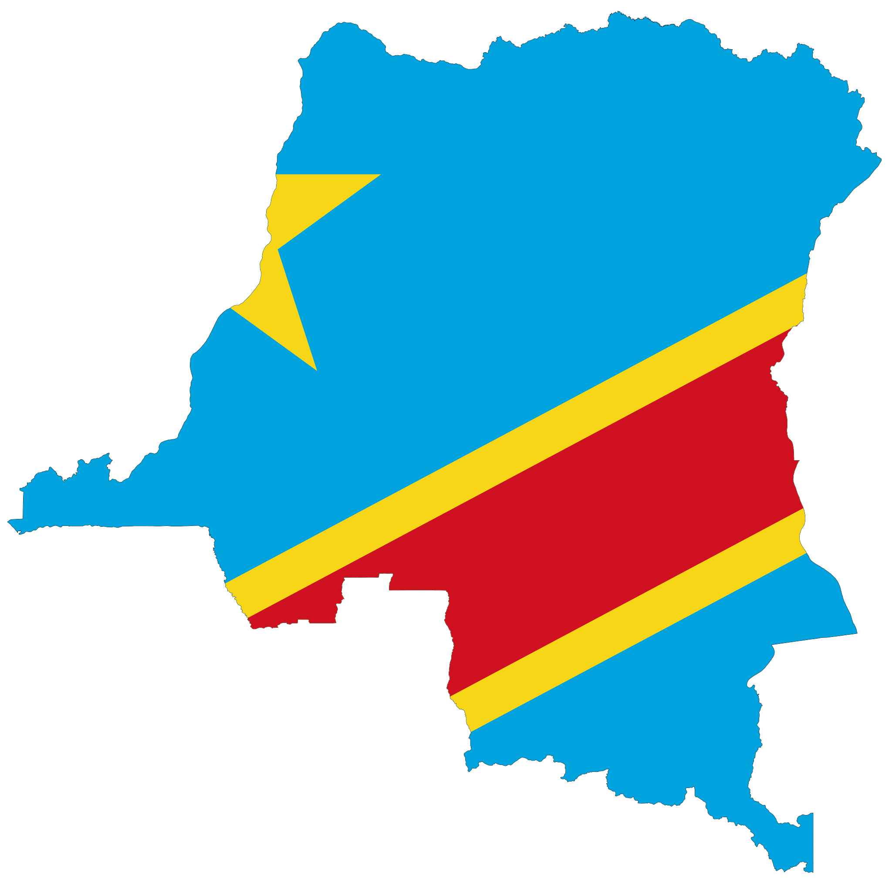

Coronavirus (Covid-19) : Recommandations au grand public
La maladie à coronavirus 2019 (COVID-19) est une maladie infectieuse provoquée par un nouveau virus qui n'avait encore jamais été identifié chez l'être humain.
Ce virus provoque une maladie respiratoire (analogue à la grippe) avec des symptômes comme la toux, la fièvre et, dans les cas les plus sévères, une pneumonie. On peut s'en protéger en se lavant fréquemment les mains, et en évitant de se toucher le visage.
RESTEZ CHEZ VOUS.
SAUVEZ DES VIES.
Contribuez à arrêter le coronavirus en RDC

RESTEZ chez vous autant que possible.
GARDEZ une distance de sécurité.
LAVEZ-VOUS souvent les mains
COUVREZ-VOUS la bouche quand vous toussez.
VOUS ÊTES MALADE? Contactez un médecin ou Appelez l'urgence .
Vous protéger et protéger les autres
La RDC vous rappelle que vous sauvez des vies en tenant compte de toutes les instructions donneées par le ministere de la Santé pour :
Vous protéger et protéger les autres
Casser les chaînes de transmission
Réduire l’impact du nombre de malades dans le pays et à l’hôpital